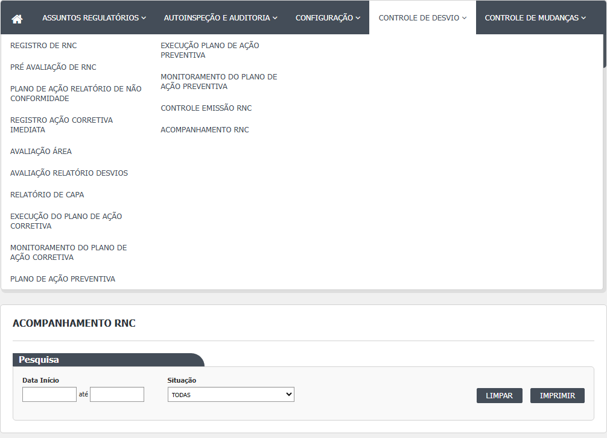
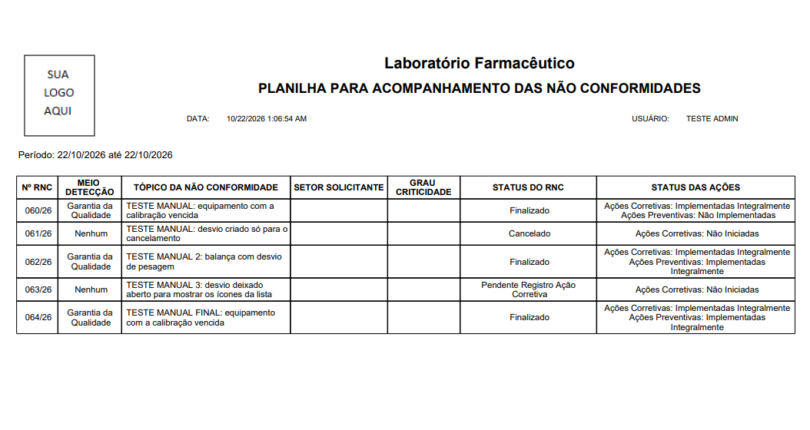
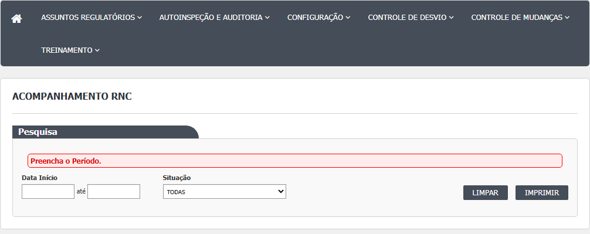

- No menu, abra Controle de Desvios › Acompanhamento RD. A tela tem um bloco Pesquisa com Data Início, até e Situação. Não há lista na tela: o resultado sai direto em PDF.

- Preencha Data Início e até, no formato dd/mm/aaaa (há calendário e máscara). Os dois campos são obrigatórios.
- Se quiser só uma situação, escolha na lista Situação. A opção TODAS (padrão) traz todos os desvios do período.
- Clique em Imprimir. Uma nova janela abre com o PDF "PLANILHA PARA ACOMPANHAMENTO DAS NÃO CONFORMIDADES", em folha A4 deitada, com o cliente, o logotipo, o período, a data e o usuário que imprimiu.

- Se um dos campos de data estiver vazio, aparece a faixa vermelha "Preencha o Período." e nada é impresso.

- Limpar apaga as duas datas, volta a Situação para TODAS e esconde a faixa vermelha.
- Não há botão Pesquisar, Incluir, Editar, Cancelar ou Visualizar. A tela só tem Limpar e Imprimir.
- Para ler o PDF: cada linha é um desvio. Nº RNC é o número com o ano (por exemplo 006/26), MEIO DETECÇÃO é o método registrado, TÓPICO DA NÃO CONFORMIDADE é a descrição do desvio, SETOR SOLICITANTE é a área de quem respondeu pelo desvio, GRAU CRITICIDADE (hoje sai sempre em branco), STATUS DO RNC é a situação do desvio e STATUS DAS AÇÕES resume as ações corretivas e, quando existe plano preventivo, as preventivas.
Observado na rodada 1 (21/10/2026):
- Sem datas, só com a Data Início ou só com a data "até": aparece a faixa "Preencha o Período." e nenhuma janela abre (CT-GQ-N13-01).
- O PDF da massa tem o cabeçalho "PLANILHA PARA ACOMPANHAMENTO DAS NÃO CONFORMIDADES" e as colunas Nº RNC, meio de detecção, tópico, setor solicitante, grau de criticidade, status do RNC e status das ações, sem agrupamento por causa ou área (CT-GQ-025). A data e a hora impressas no PDF saem no formato americano (10/21/2026 10:03:29 PM; DV-GQ-034).
- A coluna GRAU CRITICIDADE sai em branco, inclusive para o desvio com CAPA crítico (038/26) e para o menor (039/26); nenhuma ocorrência de Crítico, Maior ou Menor no PDF (CT-GQ-N13-06; DV-GQ-031).
- Escolhida uma situação, o PDF traz os desvios dela e a contagem confere (CT-GQ-N13-02). A opção "Aprovado Plano Ação Preventiva" devolve vazio, e a lista de situações não oferece Finalizado, Cancelado, Pendente Registro, Pré Avaliação, Responsável Área nem CAPA (DV-GQ-028).
- Na impressão de "todas as situações" (01/10 a 21/10), a situação impressa difere da situação da tela em 2 de 51 desvios lidos: o 018/26 (na tela, Cancelado; no PDF, Pendente Registro Ação Corretiva) e o 026/26 (na tela, Pendente Pré Avaliação; no PDF, Pendente Responsável Área). Não foi conferido de qual lado está a diferença (DV-GQ-037). Corrigido na rodada 2: a diferença não se reproduziu, e os "51" vieram de erro do programa que lia o texto do PDF (ver a subseção da rodada 2; DV-GQ-037 não confirmado).
Rodada 2 (22/10/2026)
Fonte: execucao/2026-10-22-desvios-rodada-2/resultado.md, ponto em aberto (c). O PDF foi baixado pela mesma chamada que o botão Imprimir faz (datas em mm/dd/aaaa) e conferido desvio a desvio.
- O período filtra pela data de criação do desvio, e não pela situação nem pela data da última mudança. Um período curto deixa de fora desvios mais antigos, mesmo que ainda estejam abertos: o 001/26 foi criado em 02/06/2026 e o 002/26 e o 003/26 em 07/09/2026, e não entraram num período que começa em 01/10. Para ver todos, use um período amplo (por exemplo, de 01/01 até hoje).
- Conferência: de 01/01/2026 a 22/10/2026 o sistema tinha 65 desvios e o PDF (8 páginas) trouxe os 65. De 01/10/2026 a 22/10/2026 o PDF (7 páginas) trouxe 62 dos 65; faltaram o 001/26, o 002/26 e o 003/26, pelo motivo acima.
- Os "51 desvios" e a contagem manual de "56" da rodada 1 se explicam: na rodada 1 havia 59 desvios; tirando os 3 fora do período, dá 56 (a contagem manual). Os 51 vieram do programa que lia o texto do PDF: as colunas saem em linhas desencontradas (a descrição de um desvio aparece junto do número do vizinho) e o programa perdeu 5. Não é falta no PDF. Quem conferir o PDF por programa deve saber disso.
- A situação impressa coincidiu com a da tela nos 59 de 65 desvios em que a leitura é sem ambiguidade, inclusive 018/26 (Cancelado) e 026/26 (Pendente Pré Avaliação). Nos outros 6 a leitura não permite concluir, mas nenhum contradiz a tela. A diferença vista na rodada 1 (DV-GQ-037) não se reproduziu.
Rodada 3 (22/10/2026)
Fonte: execucao/2026-10-22-desvios-rodada-3c/resultado.md. O que a rodada mostrou de novo ou contrário ao passo a passo acima:
- Passo 2, um dia só: Data Início e até iguais a 22/10/2026 trazem os 25 desvios do dia (os mesmos 25 da lista da tela 1), inclusive o criado às 14h. Nesta tela o dia final entra (CT-GQ-N13-03).
- Passo 2, datas fora do comum (CT-GQ-N13-04): Início maior que até: o PDF sai sem linhas e sem aviso. 31/02/2026 e 00/00/0000: abre uma página de erro do sistema, em vez de um aviso claro (o texto do erro está no documento interno). Início em 01/01/1900: o PDF traz os 85 desvios, sem aviso. Confira as datas antes de imprimir; a tela não avisa.
- Passo 3, Situação (CT-GQ-N13-05): a lista tem 7 opções (TODAS e as seis conhecidas) e nenhuma é Finalizado ou Cancelado. Mesmo assim, com TODAS os 18 Finalizado e os 9 Cancelado aparecem no PDF.
- Passo 8, STATUS DAS AÇÕES (CT-GQ-N13-07): os quatro textos existem (Não Iniciadas, Não Implementadas, Implementadas Parcialmente e Implementadas Integralmente), e a linha de Ações Preventivas só aparece quando há plano preventivo (inclusive o plano vazio que se cria só por abrir a tela do plano, DV-GQ-077). Mas os resultados não batem com o nome: o 078/26 (2 de 3 ações concluídas) sai "Não Implementadas", e o 079/26 e o 084/26 (todas concluídas, monitoramento pendente) saem "Implementadas Parcialmente". Ponto para validar com a área: não use esta coluna sozinha para dizer se as ações foram feitas.
- Ação removida (CT-GQ-N13-08): no plano preventivo do 053/26, com a segunda ação excluída antes de salvar e as outras duas concluídas e aprovadas, sai "Ações Preventivas: Implementadas Integralmente".
- Período sem desvios (CT-GQ-N13-12): com um ano sem desvios (2024), o PDF traz só o cabeçalho "Período: 01/01/2024 até 31/12/2024", sem linhas e sem aviso.
Rodada 4 (22/10/2026)
Fonte: execucao/2026-10-22-desvios-rodada-4/resultado.md. O que a rodada mostrou de novo ou contrário ao passo a passo acima:
- Passo 4, o PDF (CT-GQ-N13-10): traz o cliente, o título, o período, o usuário que imprimiu, a página ("Página 1/10") e o logotipo (uma imagem), em folha A4 deitada. A data e a hora impressas saem em formato americano com AM/PM ("10/22/2026 4:27:11 PM"); o resultado situa essa data no cabeçalho.
- Passo 6, Limpar (CT-GQ-N13-11): esvazia as datas, volta a Situação para TODAS e a faixa de erro não fica na tela.
- Passo 8, MEIO DETECÇÃO e SETOR SOLICITANTE (CT-GQ-N13-09): o meio "Processo / Produção" sai com a barra separada por espaços. O setor vem da área do responsável do desvio; quando o responsável não tem área cadastrada (029/26 e 054/26), o setor sai vazio. As duas áreas envolvidas do 029/26 não aparecem no relatório.
Campos da tela
Tela (Index)
| Campo na tela | Tipo | Obrigatório | Regra, limite ou valores possíveis | Fonte (arquivo:linha) |
|---|---|---|---|---|
| Data Início | Data | Sim (conferido só no navegador) | dd/mm/aaaa, máscara e calendário. O navegador só confere se não está vazio; o texto é montado como mm/dd/aaaa na chamada Rodada 1 (CT-GQ-N13-01): vazia faz aparecer "Preencha o Período." e nenhuma janela abre. Rodada 2 (22/10/2026): o período filtra pela data de criação do desvio; um período curto deixa de fora desvios criados antes (001/26, 002/26 e 003/26 num período a partir de 01/10). | Bloco2/Views/AcompanhamentoRNC/Index.cshtml:25; Bloco2/Script/AcompanhamentoRNCIndex.js:2-3,19-28,33-39 |
| até (Data Fim) | Data | Sim (conferido só no navegador) | dd/mm/aaaa. O servidor soma um dia para incluir o dia final inteiro. Não é comparada com a Data Início Rodada 1 (CT-GQ-N13-01): vazia faz aparecer "Preencha o Período." e nenhuma janela abre. | Index.cshtml:29; AcompanhamentoRNCIndex.js:4-5; AcompanhamentoRNCController.cs:40,46 |
| Situação | Lista | Não | TODAS (0) ou uma de seis: Pendente Avaliação Relatório de Desvios, Pendente Plano Ação Corretiva, Pendente Monitoramento do Plano Ação Corretiva, Aprovado Plano Ação Corretiva, Pendente Monitoramento do Plano Ação Preventiva, Aprovado Plano Ação Preventiva. Não oferece Finalizado, Cancelado, as situações iniciais nem Reprovado Rodada 1 (CT-GQ-N13-02; DV-GQ-028): as seis opções filtram e a contagem confere, exceto "Aprovado Plano Ação Preventiva", que devolve vazio. Não oferece Finalizado, Cancelado, Pendente Registro, Pré Avaliação, Responsável Área nem CAPA. | Index.cshtml:34-40; Bloco2/Models/AcompanhamentoRNCIndexModel.cs:19-37 |
| Faixa de erro | Mensagem | Não se aplica | Mostra "Preencha o Período." | Index.cshtml:19; AcompanhamentoRNCIndex.js:20-21 |
Colunas do relatório (PDF)
| Campo no relatório | Tipo | Obrigatório | Regra, limite ou valores possíveis | Fonte (arquivo:linha) |
|---|---|---|---|---|
| Cabeçalho: título | Texto fixo | Não se aplica | PLANILHA PARA ACOMPANHAMENTO DAS NÃO CONFORMIDADES | Reports/RNCAcompanhamentoRelatorio.cs:41 |
| Cabeçalho: cliente e logotipo | Texto e imagem | Não se aplica | Vêm da configuração do cliente no Principal | Reports/RNCAcompanhamentoRelatorio.cs:39-43; UI/Controllers/Services/ObterRelatorioComConfiguracaoClienteService.cs:53-69 |
| Cabeçalho: "Período: dd/mm/aaaa até dd/mm/aaaa" | Texto | Não se aplica | Datas informadas na tela, no formato do servidor | AcompanhamentoRNCController.cs:58-59; Reports/RNCAcompanhamentoRelatorio.cs:43-44; AcompanhamentoRNC.rdlc (parâmetros DataIni e DataFim) |
| Rodapé: DATA, USUÁRIO e Página x/y | Texto | Não se aplica | Data e hora da impressão, nome de quem imprimiu e paginação Rodada 1 (CT-GQ-025; DV-GQ-034): a data e a hora de impressão saíram no formato americano (10/21/2026 10:03:29 PM). O resultado situa essa data no cabeçalho; a posição no PDF fica a conferir. | AcompanhamentoRNC.rdlc (campos Now(), Usuario e PageNumber) |
| Nº RNC | Texto | Não se aplica | Número do desvio com o ano | Reports/DadosRNCFactory.cs:283 |
| MEIO DETECÇÃO | Texto | Não se aplica | Descrição do método de detecção, com " / " no lugar de "/" | Reports/DadosRNCFactory.cs:285 |
| TÓPICO DA NÃO CONFORMIDADE | Texto | Não se aplica | Descrição do desvio | Reports/DadosRNCFactory.cs:284 |
| SETOR SOLICITANTE | Texto | Não se aplica | Área do responsável do desvio (NomeAreaResponsavel). Os setores envolvidos pela pré-avaliação não são usados (código comentado) | Reports/DadosRNCFactory.cs:266-273,287 |
| GRAU CRITICIDADE | Texto | Não se aplica | Sempre em branco: o código cria o texto vazio e nunca o preenche, embora o Relatório de CAPA registre a criticidade Rodada 1 (CT-GQ-N13-06; DV-GQ-031): confirmado em branco, também para o CAPA crítico (038/26) e o menor (039/26). | Reports/DadosRNCFactory.cs:265,286 |
| STATUS DO RNC | Texto | Não se aplica | Situação atual do desvio, pela descrição do enum Rodada 1 (CT-GQ-F12; DV-GQ-037): em 2 de 51 desvios lidos a situação do PDF diferia da da tela (018/26 e 026/26). Rodada 2 (22/10/2026): não se reproduziu; em 59 de 65 desvios a situação do PDF coincide com a da tela, inclusive 018/26 (Cancelado) e 026/26 (Pendente Pré Avaliação), e nos outros 6 nenhuma contradição (DV-GQ-037 não confirmado). | Reports/DadosRNCFactory.cs:288 |
| STATUS DAS AÇÕES | Texto | Não se aplica | Duas linhas: "Ações Corretivas: x" e, se existe plano preventivo, "Ações Preventivas: y". Os valores são Não Iniciadas, Não Implementadas, Implementadas Parcialmente e Implementadas Integralmente | Reports/DadosRNCFactory.cs:275-279,303-394; Domain/Enumeradores/TipoStatusAcoes.cs:12-19 |
Rodada 2 (22/10/2026)
- Período (Data Início e até): filtra pela data de criação do desvio (RN-GQ-D13-02). Ver a conferência do PDF na seção Manual do usuário, subseção da rodada 2.
- Colunas STATUS DO RNC e Nº RNC: o PDF traz os 65 desvios do sistema quando o período é amplo (8 páginas); a situação coincide com a da tela nos desvios lidos sem ambiguidade (DV-GQ-037 não confirmado).
Rodada 3 (22/10/2026)
Fonte: execucao/2026-10-22-desvios-rodada-3c/resultado.md.
- Data Início e até (Data Fim): o dia final entra inteiro (25 desvios de 22/10/2026 com início e fim iguais, CT-GQ-N13-03). Início maior que o fim e 01/01/1900 não são recusados e não geram aviso (CT-GQ-N13-04); data impossível (31/02/2026, 00/00/0000) abre uma página de erro do sistema (documento interno).
- Situação: 7 opções (TODAS e seis); Finalizado e Cancelado não são oferecidos, mas entram no PDF com TODAS (18 e 9 desvios) (CT-GQ-N13-05).
- STATUS DAS AÇÕES: ver a subseção da rodada 3 em Manual do usuário (078/26, 079/26 e 084/26 saem com texto que não bate com o andamento; 053/26 com ação excluída antes de salvar sai Integralmente) (CT-GQ-N13-07 e N13-08).
- Cabeçalho "Período: dd/mm/aaaa até dd/mm/aaaa": com ano sem desvios, é a única coisa que sai no PDF (CT-GQ-N13-12).
Rodada 4 (22/10/2026)
Fonte: execucao/2026-10-22-desvios-rodada-4/resultado.md.
- Rodapé: DATA, USUÁRIO e Página x/y (CT-GQ-N13-10): página no formato "Página 1/10"; data e hora em formato americano com AM/PM ("10/22/2026 4:27:11 PM"), o mesmo comportamento do DV-GQ-034 (o resultado da rodada 4 não cita o número). O resultado diz que a data está no cabeçalho; o desenho do relatório a coloca no rodapé. A posição exata na folha segue a conferir.
- MEIO DETECÇÃO: o meio "Processo / Produção" sai com " / " (CT-GQ-N13-09).
- SETOR SOLICITANTE: área do responsável do desvio; vazio quando ele não tem área (029/26 e 054/26). As áreas envolvidas não aparecem (CT-GQ-N13-09).
- Cabeçalho (CT-GQ-N13-10): cliente, título, período e logotipo (uma imagem) conferem. Folha A4 deitada.
Botões e ações
| Botão ou ação | Quando aparece | O que faz | Para onde leva o desvio | Fonte |
|---|---|---|---|---|
| Imprimir | Sempre | Confere se as duas datas estão preenchidas, monta o endereço com o período e a situação e abre o PDF numa nova janela Rodada 1: sem datas, só com início ou só com fim, mostra "Preencha o Período." e não abre janela (CT-GQ-N13-01); com o período e a situação TODAS, abre o PDF com o cabeçalho e as colunas esperados (CT-GQ-025). Rodada 2 (22/10/2026): o PDF do período amplo (01/01 a 22/10) saiu com os 65 desvios em 8 páginas; o de 01/10 a 22/10, com 62 em 7 páginas. | Não muda o desvio; a tela não grava | Index.cshtml:45; AcompanhamentoRNCIndex.js:15-31; AcompanhamentoRNCController.cs:36-71 |
| Limpar | Sempre | Esvazia as datas, volta a Situação para TODAS e esconde a faixa de erro | Não muda o desvio | Index.cshtml:44; AcompanhamentoRNCIndex.js:8-13 |
| Pesquisar | Não existe | (a tela só tem Limpar e Imprimir) | Não se aplica | Index.cshtml:42-47 |
| Calendário das datas | Ao clicar nos campos de data | Escolhe a data | Não se aplica | AcompanhamentoRNCIndex.js:2-5 |
Rodada 2 (22/10/2026)
- Imprimir com período amplo ou curto: a janela do PDF abre sem mensagem nova. Não houve texto novo nesta tela na rodada 2.
Rodada 3 (22/10/2026)
Fonte: execucao/2026-10-22-desvios-rodada-3c/resultado.md.
- Imprimir: com datas impossíveis abre uma página de erro do sistema em vez do PDF; com início maior que o fim ou período sem desvios abre um PDF sem linhas, sem aviso; com início em 1900 abre o PDF completo (CT-GQ-N13-04 e N13-12). Com um dia só, traz o dia inteiro (CT-GQ-N13-03).
Rodada 4 (22/10/2026)
Fonte: execucao/2026-10-22-desvios-rodada-4/resultado.md.
- Limpar (CT-GQ-N13-11): esvazia as datas e volta a Situação para TODAS; a faixa de erro não fica na tela.
- Imprimir (CT-GQ-N13-09 e N13-10): o PDF abre em folha A4 deitada, com cliente, título, período, usuário, página e logotipo.
Mensagens do sistema
| Mensagem (texto exato do código) | Quando aparece | Fonte |
|---|---|---|
| Preencha o Período. | Imprimir com Data Início ou até vazia Texto visto na tela em 21/10/2026 (CT-GQ-N13-01), sem datas, só com início e só com fim. | Bloco2/Script/AcompanhamentoRNCIndex.js:20 |
| Não foi possível imprimir o Controle Emissão RNC | Qualquer erro ao gerar o relatório (o texto fala do outro relatório: foi copiado do Controle de Emissão de RNC) | AcompanhamentoRNCController.cs:68-69 |
| Usuário não encontrado | Imprimir sem sessão de usuário (sem entrar no sistema). É o erro que o teste de 12/10 viu | Lib/HSolutions.UI.MVC/HSolutions.UI.MVC/CustomAuthManager.cs:82 |
| Usuário logado não foi encontrado. | Relatório pedido com usuário ausente depois da leitura da sessão | UI/Controllers/Services/ObterRelatorioComConfiguracaoClienteService.cs:57 |
| Configuração do cliente não foi encontrada | Cliente sem configuração no Principal | UI/Controllers/Services/ObterRelatorioComConfiguracaoClienteService.cs:56 |
| Não Iniciadas / Não Implementadas / Implementadas Parcialmente / Implementadas Integralmente | Textos da coluna STATUS DAS AÇÕES no PDF | Domain/Enumeradores/TipoStatusAcoes.cs:12-19 |
| Ações Corretivas: / Ações Preventivas: | Prefixos da coluna STATUS DAS AÇÕES no PDF | Reports/DadosRNCFactory.cs:277-279 |
Rodada 2 (22/10/2026)
Nenhuma mensagem nova nesta tela. O ponto em aberto (c) foi resolvido com o PDF, sem mensagem de erro.
Rodada 3 (22/10/2026)
Fonte: execucao/2026-10-22-desvios-rodada-3c/resultado.md.
Nenhuma mensagem de aviso nova apareceu nesta tela. O que a rodada viu foi a falta de aviso:
- Início maior que o fim, 01/01/1900 e período sem desvios: nenhuma mensagem (CT-GQ-N13-04 e N13-12).
- 31/02/2026 e 00/00/0000: a janela do PDF mostra uma página de erro do sistema, e não uma mensagem da tela. O texto da página fica no documento interno (CT-GQ-N13-04).
Rodada 4 (22/10/2026)
Fonte: execucao/2026-10-22-desvios-rodada-4/resultado.md.
Nenhuma mensagem nova. Depois de Limpar, a faixa "Preencha o Período." não fica visível (CT-GQ-N13-11).